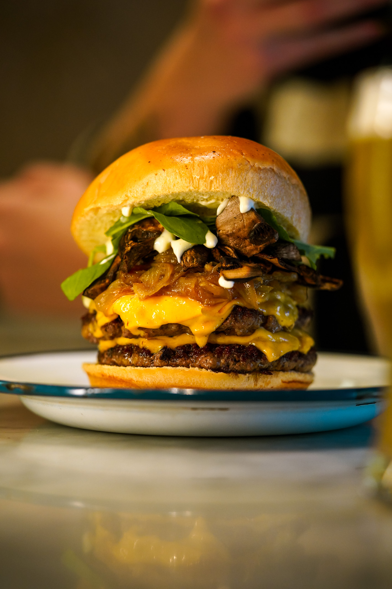
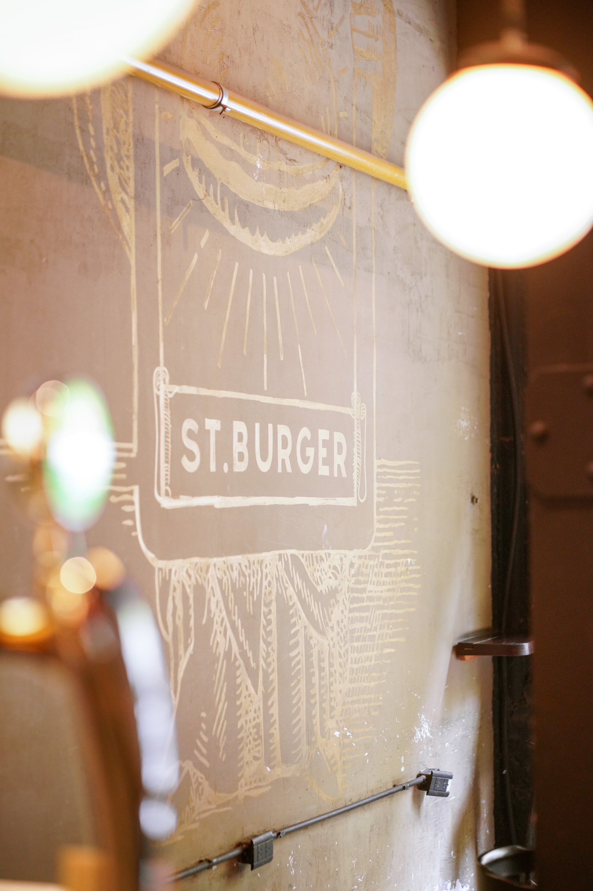
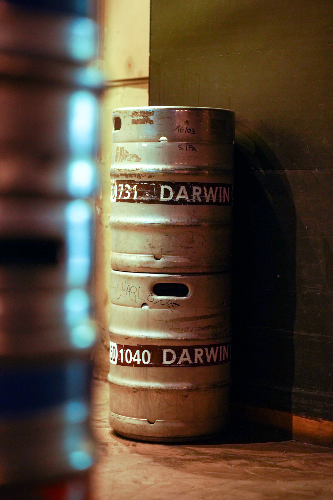
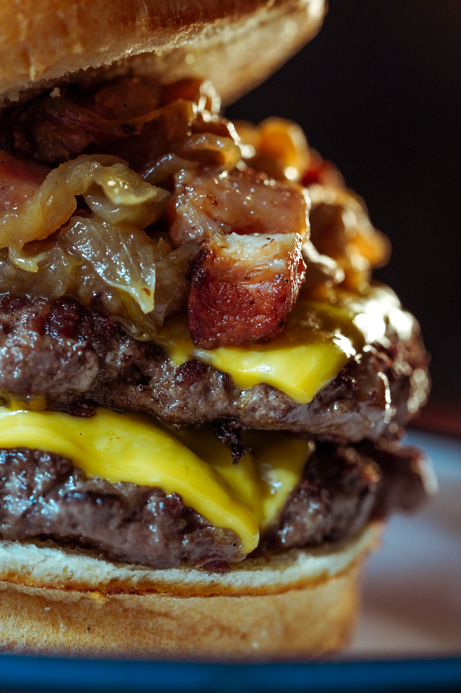
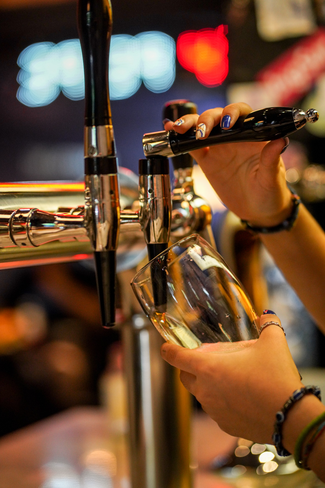
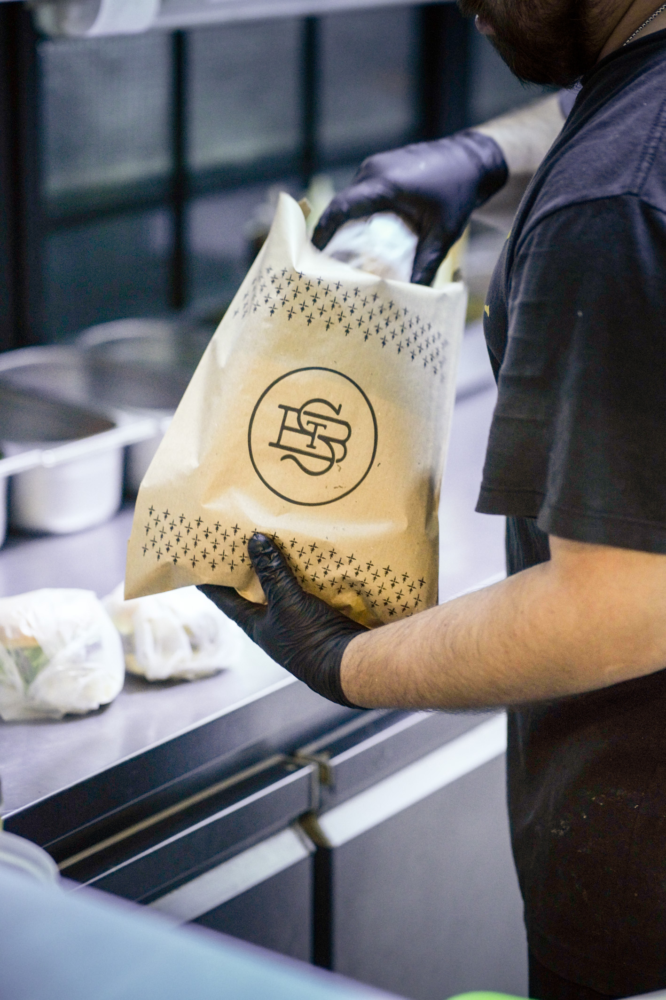

Saint Burger abre sus puertas el 6 de agoto de 2016 con una propuesta clara, ofrecer un producto de
primera calidad y un buen servicio. Un espacio para pasar un buen momento, disfrutar de una exquicita
comida, buena musica y buena onda.

El bar esta ambientado con murales, tiene mesas comunitarias e individules, tambien hay mesas en la
vereda. Es un ambiente ideal para reuniones de amigos o trabajo

Darwin y Bierhaus son la cervezas que nos acompañan desde el el princiopio, son integrantes clave para la
propuestra que queremos brindar. Ambas tienen productos de exelencia y ganaron premios a nivel nacional
e internacional.

Una de las principales caracteristicas de Saint Burger es sin duda la calidad de las materias primas que se
ultilizan para la elaboración de sus productos. Hay que destacar el blend de la carne, que conbina
perfectamente las proporciones de cortes magros y grasos.
Una de las pocas hamburgueserías ubicadas en el centro porteño que abre de noche y ofrece una amplia
propuesta de hamburguesas realizadas con medallones de 200gr de bife de chorizo en su blend. Además, las
papas fritas que acompañan también son ovacionadas por estar realizadas de papa natural, cortadas a mano
y con triple cocción. Esta hamburguesería es sin dudas uno de los secretos mejores guardados del Centro
porteño, con un producto excelente, que al estar sobre Avenida de Mayo ya es uno de los favoritos del
mundillo de las oficinas de la zona, ya sea para almorzar o para pegar un buen after office.

El bar se caracteriza por ofrecer cerveza helada, la variedad de cerveza artesanal esta pensada
para no dejar
a nadie afuera, desde rubia suave hasta una inglish ipa son algunas de las opciones que podes encontrar.

Aparte de poder comer en Saint, tambien tenes opcion tekeaway. Podes hacer tu pedido por whatsapp, rappi y
pedidosya. Te esperamos para probar unas de las mejores burgers de C.A.B.A y a los que siempre vuelven
les damos las gracias, seguimos trabajando pera mejorar!
Subir